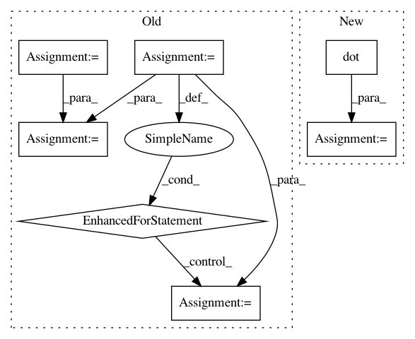

3dba9054b3c7bf4b9edabb430eb457a07e05b6ca,tensorly/mps_tensor.py,,mps_to_tensor,#Any#,8
Before Change
n_mode_dimensions = mps_get_n_mode_dimensions(factors)
D = len(n_mode_dimensions)
(r0, n1, r1) = factors[0].shape
output_tensor = factors[0]
output_tensor = tl.reshape(output_tensor, (n1, r1))
for k in range(1, D):
(r_prev, n_k, r_k) = factors[k].shape
G_k = tl.reshape(factors[k], (r_prev, n_k * r_k))
output_tensor = tl.dot(output_tensor, G_k)
output_tensor = tl.reshape(output_tensor, (-1, r_k))
output_tensor = tl.reshape(output_tensor, n_mode_dimensions)
return output_tensor
After Change
for factor in factors[1:]:
rank_prev, _, rank_next = factor.shape
factor = tl.reshape(factor, (rank_prev, -1))
full_tensor = tl.dot(full_tensor, factor)
full_tensor = tl.reshape(full_tensor, (-1, rank_next))
return tl.reshape(full_tensor, full_shape)
In pattern: SUPERPATTERN
Frequency: 4
Non-data size: 7
Instances
Project Name: tensorly/tensorly
Commit Name: 3dba9054b3c7bf4b9edabb430eb457a07e05b6ca
Time: 2018-07-05
Author: jean.kossaifi@gmail.com
File Name: tensorly/mps_tensor.py
Class Name:
Method Name: mps_to_tensor
Project Name: NifTK/NiftyNet
Commit Name: 6f98c641dc85bd665732e34acf61bc3e27cd9893
Time: 2017-05-25
Author: wenqi.li@ucl.ac.uk
File Name: nn/histogram_standardisation.py
Class Name:
Method Name: create_mapping_perc
Project Name: danielegrattarola/keras-gat
Commit Name: 9d56361641a64ff73ac630812ecd4964eedbc7aa
Time: 2017-11-09
Author: daniele.grattarola@gmail.com
File Name: gat/graph_attention_layer.py
Class Name: GraphAttention
Method Name: call
Project Name: markovmodel/PyEMMA
Commit Name: e1adf9416201a9debe4036f1f1ceb83caf6f962a
Time: 2018-02-04
Author: fabian.paul@mpikg.mpg.de
File Name: pyemma/coordinates/tests/test_vamp.py
Class Name: TestVAMPSelfConsitency
Method Name: test